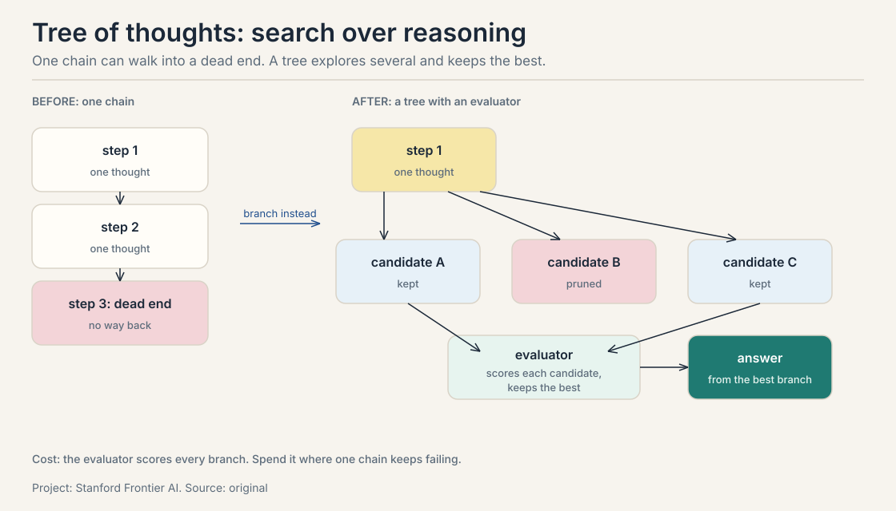
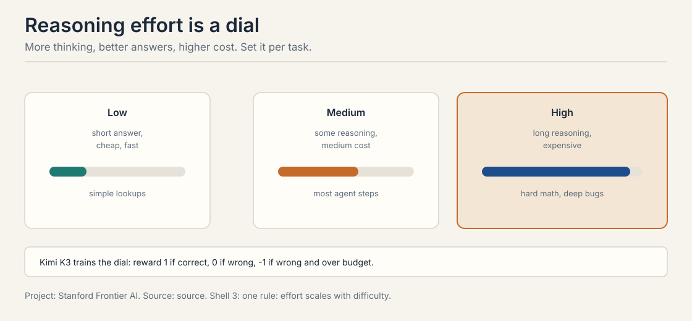
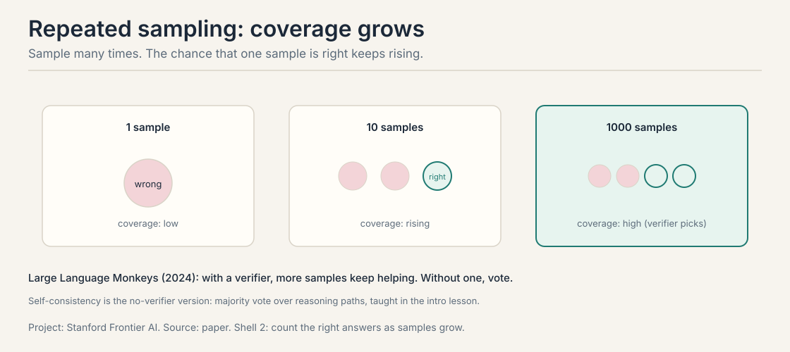
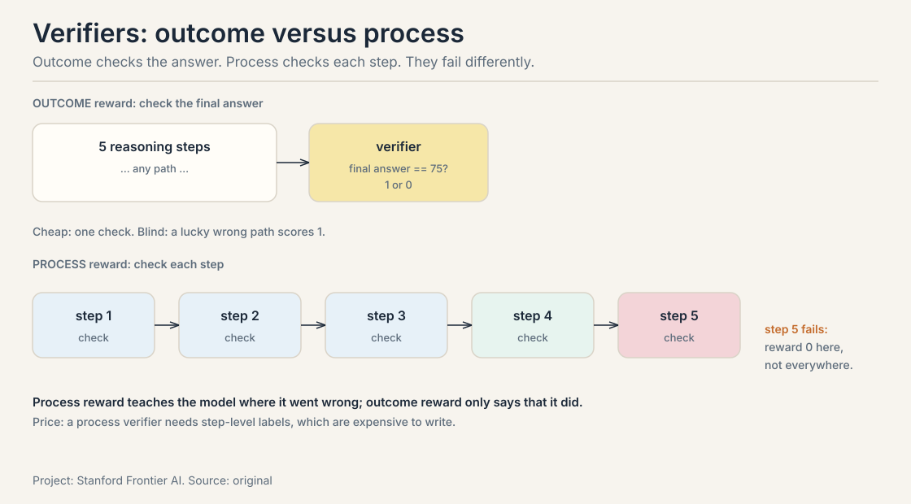
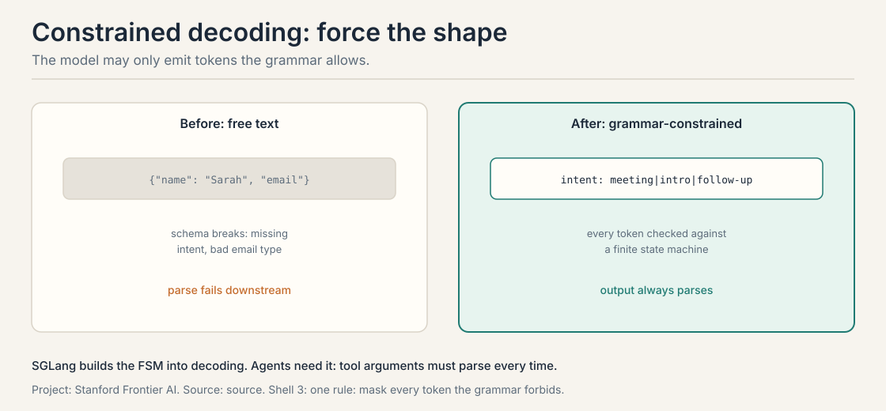
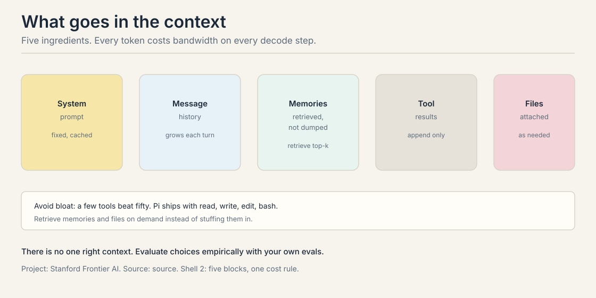
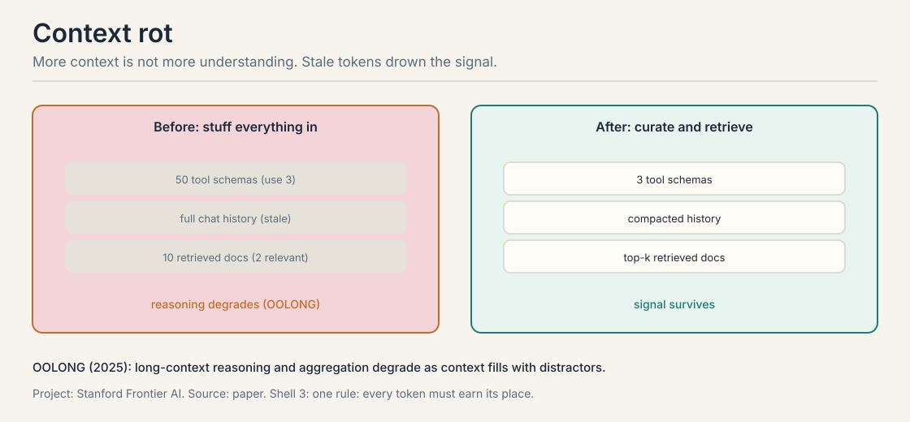
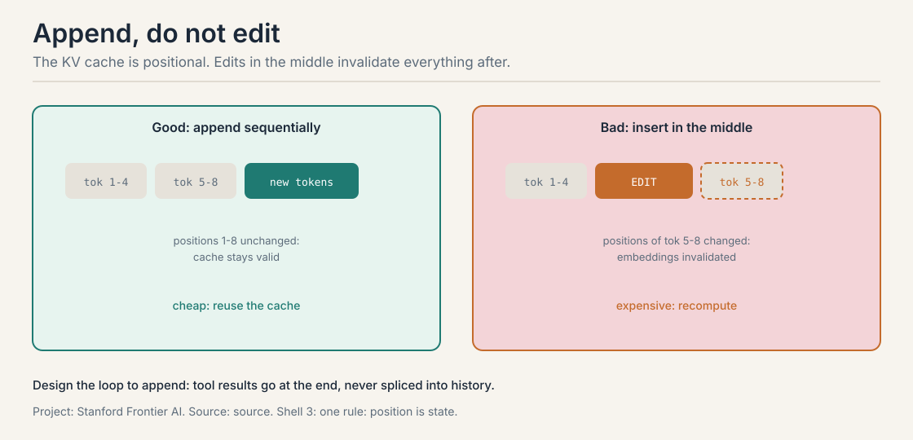
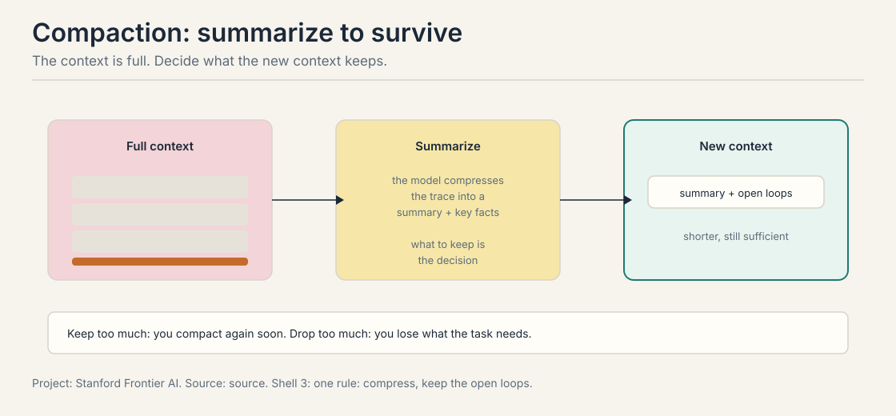
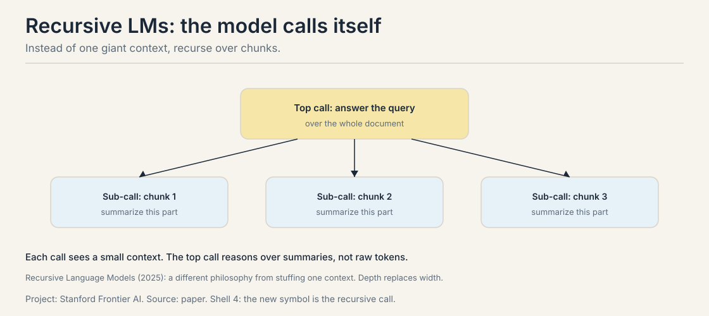

Lecture 2B: Inference-Time Scaling, Structured I/O, Context Engineering
The job: training is frozen, queries are not
Training happens once. Queries arrive forever, and they vary in difficulty. “What is 2+2” and “debug this race condition” should not cost the same. Inference-time scaling spends compute after training, per query: more tokens for the hard ones, fewer for the easy ones.
The lecture’s toy makes the case. A jacket costs $80. The store raises its price by 25 percent, then offers a 25 percent discount on the new price. What is the final price?
First attempt: answer directly
The direct answer pattern-matches: adding 25 percent and subtracting 25 percent looks like no change. So $80.
+25% then -25% -> looks like cancellation -> $80
Wrong. The two percentages use different bases. The increase applies to $80. The discount applies to the increased price. The pattern “cancels out” is a mirage, and the direct answer walks into it with full confidence.
Where direct answers break
Work the arithmetic the direct answer skipped:
increase: $80 x 1.25 = $100 (25% of $80 is $20) discount: $100 x 0.75 = $75 (25% of $100 is $25) check: $80 + $20 - $25 = $75
The true answer is $75. The direct answer is off by $5, a 6.25 percent error from a confident pattern match. The mistake is invisible without the intermediate numbers. Each step of the worked version is a small, checkable claim: $80 to $100, $100 to $75. The direct answer has no steps to check.
The key question
What if the model writes the steps, and we spend compute on the steps that need it?
Chain of thought: working memory, not smarts
Chain of thought (Wei et al., 2022) elicits the reasoning steps before the answer. The model writes the intermediate math, and the intermediate math is checkable. The jacket trace above is the whole idea: $80 x 1.25 = $100, $100 x 0.75 = $75, check the bases.
The misunderstanding: chain of thought does not make the model smarter. It gives the model working memory. Each step is a small claim the model commits to in text, where a verifier or a human can catch it. And the failure mode: long traces on ambiguous questions accumulate confident-sounding errors. The steps are in the open, but open errors are still errors. The fix is the same as in agents: verify the steps, do not just admire them.
Tree of thoughts: search over reasoning
Chain of thought walks one path. Tree of thoughts (Yao et al., 2023) branches: at each step, generate several candidate thoughts, score them with an evaluator, keep the best, and continue. Search over reasoning steps, not just tokens.

The evaluator is the load-bearing part. It can be the model itself (“is this step promising?”), a learned value function, or a hard check (“does this partial solution still satisfy the constraints?”). The cost is the evaluator: every branch scored is tokens spent. The decision rule: reach for the tree when one chain keeps walking into dead ends on the same problem class. For problems where the first path usually works, the tree is expensive insurance.
The effort dial
Reasoning models expose an effort setting: low, medium, high. Low is cheap and fast for simple lookups. High spends many tokens on hard math and deep bugs. The system prompt sets it per query.

Kimi K3 trains the dial explicitly with a budget-aware reward:
correct answer: reward = +1 wrong answer: reward = 0 wrong AND over the budget: reward = -1
Read what the -1 teaches. A wrong answer already scores 0. A wrong answer that also burned the budget scores -1: worse than being wrong cheaply. The model learns two lessons at once: be right, and do not spend effort where it does not pay. That is the dial, learned.
The K3 technical report (Moonshot AI, “Reasoning Effort RL”) describes the full scheme: each problem x gets a token budget b0(x) estimated from the cold-start model, and any trajectory whose total token cost T(y) exceeds a scaled threshold tau times b0(x) has its task reward overridden to -1. Training anneals tau from large to small, producing max, high, and low effort experts that are distilled into one model which reads the effort level as an instruction. The lesson’s +1/0/-1 table is the scheme’s shape at one tau. The report adds the annealing that turns one dial into three gears.
The agent lesson: set effort per step, not per agent. A file lookup gets low effort. A tricky bug gets high effort. The loop already knows which steps are hard: the ones that failed before.
Repeated sampling: the verifier is the scarce resource
Sample the same prompt N times. With a verifier, pick the best. Coverage, the chance that at least one sample is right, keeps rising with more samples. Large Language Monkeys (Brown et al., 2024) shows inference compute keeps helping far past intuition. The math of coverage, worked on a toy: if each sample succeeds with probability 0.3, ten samples give 1 - 0.7^10 = 0.97. Ninety-seven percent coverage from a thirty-percent model, provided the verifier can spot the winner.

Without a verifier, vote. Self-consistency is the no-verifier version: sample many reasoning paths, take the majority answer. The cost is linear in samples either way. The agent version: sample three candidate plans, execute the best-scoring one. Sampling is cheap. Checking is dear. The verifier is the scarce resource, which is why the builders lesson spent so long on verifier design.
Verifiers: outcome versus process
A verifier checks work. Two kinds, and they fail differently. An outcome verifier checks the final answer: 75 or not, 1 or 0. A process verifier checks each step: which step went wrong.

Outcome reward is cheap: one check at the end. It is also blind: a lucky wrong path scores 1, and the model learns nothing about where it succeeded. Process reward teaches the model where it went wrong, step by step, but it needs step-level labels, which are expensive to write. The builders lesson’s RLVR is outcome reward at scale. Process supervision is the premium version teams buy when outcome reward plateaus. For agents, the check step of the loop is usually an outcome verifier (tests pass), and the debugging skill is process verification done by hand.
Mapping back I: what inference-time compute buys
| Direct-answer crack | The answer | How |
|---|---|---|
| Pattern-match says $80 | Chain of thought | The steps $80 to $100 to $75 expose the base change |
| One chain walks into dead ends | Tree of thoughts | Branch, score with an evaluator, keep the best |
| Every query costs the same | Effort dial | Low for lookups, high for hard bugs; Kimi K3’s -1 teaches the budget |
| One shot, one chance | Repeated sampling | 1 - 0.7^10 = 0.97 coverage from a 0.3 model, with a verifier |
| The verifier only sees the answer | Process reward | Check each step; teach where it went wrong |
The honest price of this half: tokens are money and latency. A small model with a big inference budget can beat a big model with none, but the budget is real. Spend it where the errors are.
The second contract: structured output
Agents are programs, and programs need contracts. The model’s output goes to a parser, a tool, or another agent. Free text breaks the contract: plausible-looking JSON with a missing field, a wrong type, a trailing comma. The parser fails downstream and the loop burns a turn.
Constrained decoding enforces the contract at generation time. The decoder may only emit tokens the grammar allows. SGLang implements this with finite state machines built into decoding. Every token is checked against the grammar as it is generated. The output always parses.

This is the validate stage of the tool call, moved into the decoder itself. The cost: the grammar must be written, and constrained decoding adds overhead per step. The benefit for agents is decisive: tool arguments must parse every time. What constrained decoding cannot fix is semantics. The output parses but can still be wrong: a valid tool call with the wrong arguments, a well-formed plan that misunderstands the goal. The grammar constrains shape, not meaning. Meaning needs the check step.
DSPy (Declarative Self-improving Python) declares the contract one level up. A signature names the input and output fields of a model call, and DSPy compiles the prompt that implements it. The lecture’s example extracts contact info:
input: "I'm Sarah (sarah@acme.co). Meet Thursday?"
output fields:
name: str
email: Union[str, None] <- must match the JSON schema
intent: Literal['meeting',
'intro', 'follow-up'] <- exact match, no extra chars
The compiled prompt wraps each field in markers and states the type constraints in prose. The signature is the contract. The compiled prompt is the implementation. Two lighter constraining tools: a small classifier head on embeddings for fixed label sets (cheap, fast, no generation), and the Toolformer pattern, where the tool’s argument schema is the structured output.
Structured output in production
The providers productized this contract. OpenAI’s structured outputs and Anthropic’s tool-use schemas both guarantee JSON matching a given schema: the grammar approach, as an API feature. The decision rule for builders: use the provider’s structured output for tool calls and handoff payloads (the shape must hold every time), and reserve full constrained decoding (SGLang, Outlines, Guidance) for grammars the API cannot express: nested conditionals, custom DSLs, exact-length fields. Shape is a solved problem at the API layer. Spend your engineering on meaning.
The third contract: the context
Context engineering is the design of what the model sees. Five ingredients: the system prompt, the message history, memories, tool call results, and attached files.

Three practical rules from the lecture. Avoid bloat: a few tools beat fifty. Pi (Mario Zechner’s minimal terminal coding agent, defined in the compound-systems lesson) ships with four: read, write, edit, bash. Retrieve on demand: fetch the relevant memories and files when needed instead of stuffing them in. Evaluate empirically: set up a small eval set and test each context choice. There is no one right context. The context is a design surface, not a dumping ground.
Where stuffing breaks: context rot
More context is not more understanding. OOLONG (Bertsch et al., 2025, arXiv:2511.02817) measures long-context reasoning and aggregation: tasks that require analyzing chunks of text at the atomic level and then aggregating the analyses into distributional answers. The headline number: GPT-5, Claude Sonnet 4, and Gemini 2.5 Pro all score below 50 percent accuracy on both task splits at 128K tokens. Needle-in-a-haystack lets the model ignore almost the whole context as noise. OOLONG forbids that, because the answer depends on nearly every line. As the context fills with distractors, the model’s reasoning degrades. The lecture calls this context rot.

The before state: fifty tool schemas when the task needs three, full chat history gone stale, ten retrieved documents with two relevant. The after state: three schemas, compacted history, top-k documents. Same task, less rot, better answers. The mechanism is attention dilution plus the decode cost from the builders lesson: every distractor token is bandwidth spent on noise and a chance to mislead the next step.
The KV-cache placement rule
The KV cache is positional. Appending tokens at the end keeps every existing position unchanged, so the cache stays valid. Inserting or editing in the middle shifts positions: every token after the edit gets new position embeddings, and their cached keys and values are wrong.

The design rule: the loop appends. Tool results go at the end of the context, never spliced into history. Rewriting history is not just confusing for the model. It is expensive, forcing recomputation of the whole suffix.
Compaction: the keep-or-drop dilemma
Long trajectories fill the context. Compaction summarizes it: the model compresses the trace into a summary plus key facts, and the new context starts from there.

The decision is what to keep, and the lecture names the two failure modes without resolving them. Keep too much and you compact again soon: no savings. Drop too much and you lose critical context: the task fails for lack of a fact you had. Resolution is empirical: test what the summary must contain for your task class. In practice, keep the goal, the open loops (what is still undone), the key facts discovered, and the current plan. Drop stale tool outputs, superseded plans, and dead-end attempts. The summary is a new perceive step for a fresh loop.
Recursive LMs: a different philosophy
Recursive language models (Zhang, Kraska, and Khattab, MIT CSAIL, arXiv:2512.24601, December 2025) reject the giant context. Instead of loading the document into the context window, the long context is held in a REPL environment as a variable. The root model never sees the full text. It writes small code blocks that peek at slices, grep for keywords, and chunk the document, and it calls sub-LMs on the chunks with questions: summarize this part, extract the dates from this part. The top call reasons over the sub-call results.

Each call sees a small context, so there is no rot and no quadratic blowup. The paper’s reported numbers are strong: an RLM on GPT-5 scores 91.3 percent on BrowseComp+ (reasoning over up to 11 million tokens of documents) against 70.5 percent for a summary-agent baseline, and improves OOLONG scores substantially. The tradeoff: detail is lost in the summaries, errors in a sub-call propagate silently upward, and a reproduction study flags over-recursion latency and non-termination on ambiguous prompts. Calibrate the recursion depth.
Compare with RAG: RAG retrieves chunks into one context. RLM recurses over chunks with separate calls, and the model itself decides the chunking strategy in code. Both fight the same enemy, the O(n^2) context. RAG is retrieval plus one reader. RLM is divide and conquer with the model as the divider.
What is used where: inference-time in production
| Technique | Production form | The check it needs |
|---|---|---|
| Reasoning effort | o-series, DeepSeek-R1, Claude extended thinking: the dial is a product feature | none extra: the model was trained for it |
| Repeated sampling | AlphaCode 2 samples up to 1M; SWE agents sample N patches | the verifier: tests, or the task fails |
| Self-consistency | cheap accuracy boost where no verifier exists | majority vote is the check |
| Constrained decoding | OpenAI structured outputs; SGLang grammars | the schema: shape guaranteed, meaning not |
| DSPy | signatures compiled to prompts; optimizers tune them | the metric the optimizer targets |
| Context engineering | Anthropic’s agent guide: the five ingredients | a small eval set per context choice |
| Compaction | long-horizon agents summarize the trace | the keep list: goal, open loops, key facts |
The pattern: every production system pairs an inference-time spend with a check. Effort without a verifier is hope. Sampling without a test suite is noise. The check is the scarce resource in every row.
Mapping back II: what the contracts fix
| Context crack | The answer | How |
|---|---|---|
| Parser chokes on free text | Constrained decoding | The grammar masks every forbidden token; output always parses |
| Fifty schemas, three needed | Avoid bloat | Pi’s four tools; retrieve memories and files on demand |
| Distractors degrade reasoning | Curation | Three schemas, compacted history, top-k docs; OOLONG measures the rot |
| Mid-context edits kill the cache | Append-only loop | Tool results go at the end; positions never shift |
| The trace outgrows the window | Compaction or RLM | Summarize to goals plus open loops, or recurse over chunks |
The honest price
Inference-time compute costs tokens, and tokens are latency and money. Chain of thought gives working memory, not intelligence, and long traces accumulate confident errors in the open. Context rot is measured, not hypothetical. Compaction’s keep-or-drop dilemma has no principled answer: the lecture leaves it empirical. Recursive LMs dodge the quadratic context but let sub-call errors propagate silently. Every contract here, shape and context both, is a bet placed per task. The lecture’s final word on context stands: experiment, and measure.
Interview Q&A
The naive answer pattern-matches: plus 25 minus 25 looks like zero change, so $80. Writing the steps forces the model to compute each stage: 80 to 100, then 100 to 75, exposing that the discount applies to a different base. The check, $80 + $20 - $25 = $75, closes it. What this tells you: CoT is working memory, not intelligence. Each step is a small, checkable claim committed to text. It does not make the model smarter. It gives errors a place to be caught. When the steps are uncheckable and the model is confident anyway. Long reasoning traces on ambiguous questions accumulate confident-sounding errors, each step building on the last. The fix is the agent’s fix: verify the steps against the world or a verifier. Open errors are still errors.
Usually the 50 quick samples with the verifier picking. Coverage grows fast: at 0.3 success per sample, ten samples give 1 - 0.7^10 = 0.97 coverage. High effort wins when the task needs deep sequential reasoning that quick samples never stumble into: a proof with a 20-step dependency chain, a bug that needs sustained attention. Spend the budget where the errors are: breadth when solutions are scattered, depth when they are buried. A bad verifier. If the check accepts wrong answers, more samples just find more ways to be wrong. This is the verifier-design warning from the builders lesson, applied at inference time. Sampling is cheap. Checking is dear. A cheap check is worse than none because it certifies garbage.
When one chain keeps walking into dead ends on the same problem class: puzzles, planning, multi-step math where an early wrong turn poisons everything after. The tree branches at each step, scores candidates with an evaluator, and keeps the best. The cost is the evaluator: every branch scored is tokens spent. For problems where the first path usually works, the tree is expensive insurance. The decision rule: reach for the tree when chains fail systematically, not when they fail once. A cheap, reliable signal about partial solutions: constraint checks (“does this partial plan still satisfy the requirements?”), the model itself judging promise, or a learned value function. The evaluator is load-bearing: a bad one prunes the good branches and the tree is worse than one chain. This is the verifier problem again, one level up.
Outcome reward checks the final answer: cheap, one check, but blind. A lucky wrong path scores 1 and the model learns nothing about where it succeeded. Process reward checks each step: it teaches the model where it went wrong, but it needs step-level labels, which are expensive to write. RLVR at scale is outcome reward. Process supervision is the premium version teams buy when outcome reward plateaus. For agents, the loop’s check step is usually outcome (tests pass). Debugging skill is process verification done by hand. Label cost and label quality. Someone must judge every step, and step-level judges disagree more than answer-level judges. Noisy process labels teach the model to game the step judge instead of solving the task. Outcome reward has one judge and one verdict. Process reward has N judges and N chances to be wrong.
A chatbot’s output goes to a human who tolerates a malformed sentence. An agent’s output goes to a parser, a tool, or another agent. One bad token breaks the tool call and burns a loop turn. Constrained decoding turns “usually valid JSON” into “always valid JSON” by masking every token the grammar forbids, as it is generated. It is the validate stage of the tool call moved into the decoder itself. Semantics. The output parses but can still be wrong: a valid tool call with the wrong arguments, a well-formed plan that misunderstands the goal. The grammar constrains shape, not meaning. Meaning needs the check step of the agent loop. Shape guarantees are cheap. Meaning guarantees are the whole hard problem.
Context rot is the measured degradation of reasoning as the context fills with distractors (OOLONG, 2025). More context is not more understanding: every distractor token is decode bandwidth spent on noise and a chance to mislead the next step. Three defenses from the lecture. Avoid bloat: a few tools beat fifty, as Pi’s four tools show. Retrieve on demand: fetch memories and files when needed instead of stuffing them in. Compact: summarize the trace to goals, open loops, and key facts before the window fills. The KV cache is positional. Appending at the end keeps every existing position unchanged, so the cache stays valid. Editing in the middle shifts positions: every token after the edit gets new position embeddings and its cached keys and values are wrong. Rewriting history forces recomputation of the whole suffix. The rule is append-only, with compaction as the one expensive rewrite.
First, stop the bleeding: cut the tool set to what the task needs, and retrieve memories and files on demand instead of stuffing them in. Second, compact: summarize the trace to the goal, the open loops, and the key facts, and restart the context from the summary. Third, consider recursion: a recursive LM delegates chunks to sub-calls instead of one giant context. The choice depends on the failure: bloat means curation, stale history means compaction, and a fundamentally too-large document means recursion or retrieval. In all cases, measure on a small eval set: the right context is empirical. The goal, the open loops (what is still undone), the key facts discovered, and the current plan. Drop stale tool outputs, superseded plans, and dead-end attempts. The summary is a new perceive step for a fresh loop. The keep-or-drop dilemma has no principled answer: test what the summary must contain for your task class.
Recap: the whole lesson on one screen
The story in nine steps. Each step answers the one before it.
- Training is frozen. Queries vary. “What is 2+2” and “debug this race condition” should not cost the same. Spend compute per query.
- Direct answers pattern-match. +25% then -25% looks like cancellation. $80. Wrong by $5.
- The steps expose the base. $80 x 1.25 = $100, $100 x 0.75 = $75. Each step is a checkable claim. CoT is working memory, not smarts.
- Search the reasoning when chains die. Tree of thoughts branches and scores. The evaluator is load-bearing.
- Effort is a dial. Low, medium, high, set per step. Kimi K3’s reward: +1 correct, 0 wrong, -1 wrong and over budget. The -1 teaches the budget.
- Sample many, verify once. 1 - 0.7^10 = 0.97 coverage from a 0.3 model. Outcome reward checks the answer. Process reward checks each step. Checking is the scarce resource.
- Force the shape. Constrained decoding masks forbidden tokens. Output always parses. DSPy signatures declare the contract. Shape, not meaning.
- Engineer the context. Five ingredients. Defenses against rot: few tools, retrieve on demand, compact. Append, never edit: the KV cache is positional.
- The price is tokens. Latency and money per step. Compaction’s keep-or-drop dilemma is empirical. RLM dodges the quadratic context but propagates sub-call errors silently.
Go deeper
- Why “Thinking” AI Models Are Different (the embed above): https://www.youtube.com/watch?v=DTuhy_EGnBY, chain of thought, test-time compute, how thinking models are trained with RL, and the honest caveats.
- Mini Leviathan, How AI Reasoning Chains Work (the embed above): https://www.youtube.com/watch?v=sjhCFYpT3Mo, chain-of-thought, tree-of-thought, and self-consistency walked through on reasoning tasks.
Further: - Anthropic, Effective context engineering for AI agents: https://www.anthropic.com/engineering/effective-context-engineering-for-ai-agents, the five ingredients in production form. - Yao et al., Tree of Thoughts (2023): https://arxiv.org/abs/2305.10601, deliberate search over reasoning steps. - Brown et al., Large Language Monkeys (2024): https://arxiv.org/abs/2407.21787, inference compute keeps helping far past intuition. - SGLang documentation: constrained decoding with finite state machines. [uncertain: exact docs URL. Search “SGLang structured generation”.]
Official sources and further reading
Official: - Lecture 2 slides (local: sources/agents/cs329z/lecture02.pdf). - Course site: http://web.stanford.edu/class/cs329z.
Further reading: - Wei et al., Chain-of-Thought (2022): https://arxiv.org/abs/2201.11903. - DSPy documentation: signatures and compilation. - OOLONG (Bertsch et al., 2025): https://arxiv.org/abs/2511.02817, long-context reasoning and aggregation; frontier models below 50 percent at 128K. - Recursive Language Models (Zhang, Kraska, and Khattab, 2025): https://arxiv.org/abs/2512.24601, the REPL-and-sub-call mechanism behind the recursive philosophy. - Recursive Language Models paper (2025): the recursion philosophy.
Caveats from these sources. The slides cite blog and paper figures for several claims. The plates here are original. Effort-level mechanics differ across providers. The Kimi K3 reward numbers are the lecture’s. The coverage arithmetic is a worked toy, not a measured rate. No lecture video is on record. The embed above is a third-party explainer, verified live.
Connections to the other courses
- CS336 L10/L18: the inference cost model behind every choice here. Decode bandwidth is the tax.
- CS336 L15/L16: reasoning models and RLVR: where the effort dial comes from.
- CS329A: studies inference-time scaling as a research subject (test-time compute, verifiers, search). This lesson is the engineering interface to the same ideas.
- This course, intro lesson: self-consistency and the agent loop. Inference-time methods plug into the plan and check steps.
- This course, builders lesson: verifier design, which repeated sampling depends on.
- This course, RAG lessons: retrieval is the main weapon against context rot. Compaction and RLM are the alternatives.
Sources
- SLIDESLecture 2 slides: LLMs for Builders (local: sources/agents/cs329z/lecture02.pdf)
- PAPERWei et al., Chain-of-Thought Prompting Elicits Reasoning in Large Language Models (2022)
- PAPERBrown et al., Large Language Monkeys: Scaling Inference Compute with Repeated Sampling (2024)
- SUPPLEMENTAnthropic Engineering: Effective context engineering for AI agents
- SUPPLEMENTYao et al., Tree of Thoughts: Deliberate Problem Solving with Large Language Models (2023)